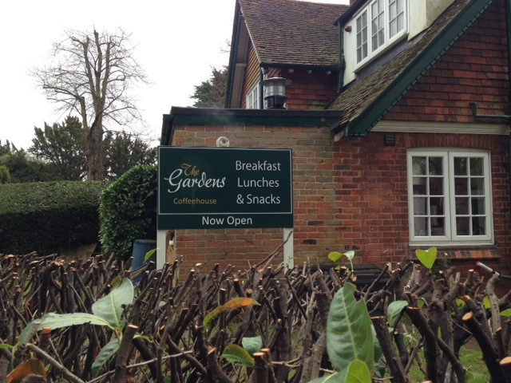

Gardens Coffee House
The friendly and inviting Gardens Coffee House is open 7 days a week from 10-4 on weekdays, 9-4 at weekends. We have soft seating as well as more formal tables for breakfast/lunch and some outdoor seating. Snacks and great coffee are available to take away, and we also offer a range of cold drinks, cakes and ice creams.
Our children's menu is healthy and great value, making a perfect lunch stop after the Gardens' playground.
Please like us on Facebook for competitions and updates, or view our current menu here.
